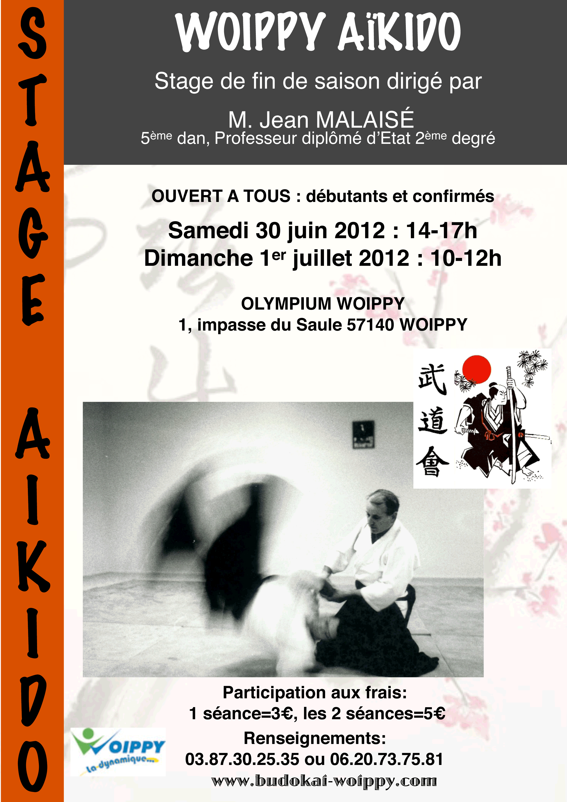

BUDOKAI - WOIPPY
Actualités du Club
_____________________________
Samedi 15 septembre 2012
Journée Portes Ouvertes

_____________________________
30 juin et 01 juillet 2012
Stage de fin de saison

_________________________________________________________________________________